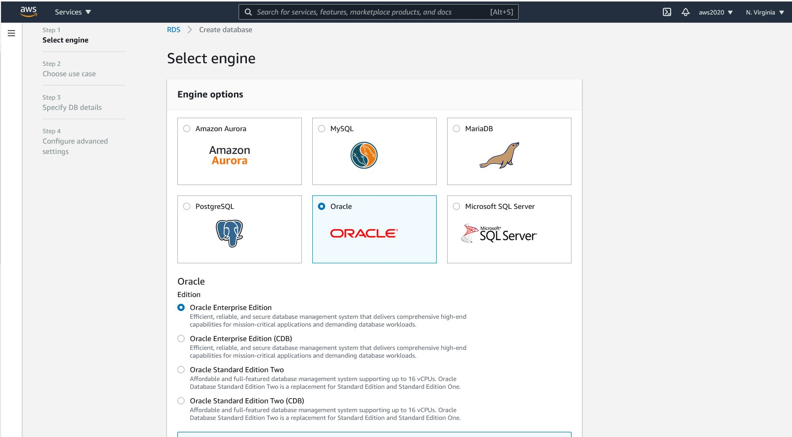
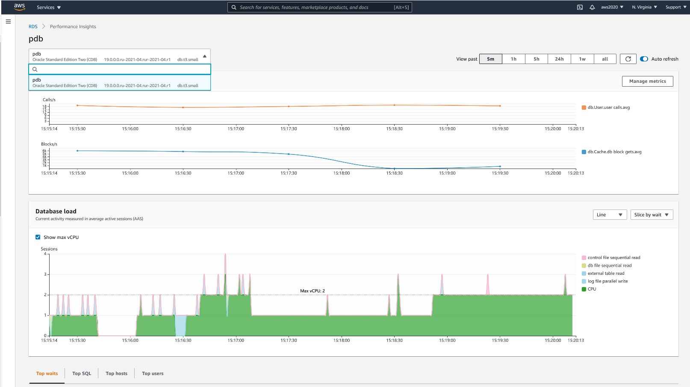

This was first published on https://www.dbi-services.com/blog/amazon-rds-oracle-in-multitenant/ (2021-05-26)
Republishing here for new followers. The content is related to the versions available at the publication date.
. 
AWS has just added the possibility to create your oracle Database as as CDB (Container Database), the “new” architecture of Oracle where an instance can manage multiple databases, adding a new level between the heavy instance and lightweight schema:
At the time I’m writing this, I see it only in the “old” console (“original interface”) not in “new database creation flow”. It is displayed as a different Edition, however it is exactly the same price even when license is included.
The CDB name is always RDSCDB but you can choose the PDB name as “Database name” – I left the default “ORCL” here:
ORACLE19C@//pdb.cywlwrcont2f.us-east-1.rds.amazonaws.com/ORCL>
select con_id, cdb, dbid, con_dbid, name, created, log_mode, open_mode, database_role, force_logging, platform_name, flashback_on, db_unique_name from v$database;
CON_ID CDB DBID CON_DBID NAME CREATED LOG_MODE OPEN_MODE DATABASE_ROLE FORCE_LOGGING PLATFORM_NAME FLASHBACK_ON DB_UNIQUE_NAME
_________ ______ ________________ ______________ _________ ____________ _______________ _____________ ________________ ________________ ___________________ _______________ _________________
0 YES 3,360,638,310 490,545,968 RDSCDB 07-MAY-21 NOARCHIVELOG READ WRITE PRIMARY NO Linux x86 64-bit NO RDSCDB_A
ORACLE19C@//pdb.cywlwrcont2f.us-east-1.rds.amazonaws.com/ORCL>
SELECT pdb_id,pdb_name,dbid,con_uid,guid,status,con_id FROM dba_pdbs;
PDB_ID PDB_NAME DBID CON_UID GUID STATUS CON_ID
_________ ___________ ______________ ______________ ___________________________________ _________ _________
3 ORCL 490,545,968 490,545,968 C3395C709E011676E0530100007F3932 NORMAL 3
ORACLE19C@//pdb.cywlwrcont2f.us-east-1.rds.amazonaws.com/ORCL>
select service_id, name, network_name, creation_date, pdb, sql_translation_profile from dba_services;
SERVICE_ID NAME NETWORK_NAME CREATION_DATE PDB SQL_TRANSLATION_PROFILE
_____________ _______ _______________ ________________ _______ __________________________
7 ORCL ORCL 26-MAY-21 ORCL
ORACLE19C@//pdb.cywlwrcont2f.us-east-1.rds.amazonaws.com/ORCL>
This is not a best practice, but there’s no services declared there which mean that I can connect only with the default service registered from the PDB name. The documentation even recommends to connect with (CONNECT_DATA=(SID=pdb_name)) – I filled a feedback about this as this is a bad practice for 20 years.
I use EZCONNECT and create my own service:
ORACLE19C@//pdb.cywlwrcont2f.us-east-1.rds.amazonaws.com/ORCL>
connect oracle19c/franck@//pdb.cywlwrcont2f.us-east-1.rds.amazonaws.com/ORCL
Connected.
ORACLE19C@//pdb.cywlwrcont2f.us-east-1.rds.amazonaws.com/ORCL>
exec dbms_service.start_service(service_name=>'MY_APP')
PL/SQL procedure successfully completed.
ORACLE19C@//pdb.cywlwrcont2f.us-east-1.rds.amazonaws.com/ORCL> select name,network_name,creation_date,con_id from v$active_services
2 /
NAME NETWORK_NAME CREATION_DATE CON_ID
_________ _______________ ________________ _________
orcl orcl 26-MAY-21 3
MY_APP MY_APP 26-MAY-21 3
I can now connect as oracle19c/franck@//pdb.cywlwrcont2f.us-east-1.rds.amazonaws.com/MY_APP
Even if it is multitenant and I have only one PDB there, the whole CDB is mine:
ORACLE19C@//pdb.cywlwrcont2f.us-east-1.rds.amazonaws.com/ORCL>
select listagg(rownum ||': '||con_id_to_con_name(rownum),', ') con_name from xmltable('1 to 5000') where con_id_to_con_name(rownum) is not null;
CON_NAME
____________________________________
1: CDB$ROOT, 2: PDB$SEED, 3: ORCL
This lists all containers around me. Of course, I cannot go to CDB$ROOT as I have only a local user here.
ORACLE19C@//pdb.cywlwrcont2f.us-east-1.rds.amazonaws.com/ORCL>
show parameter max_pdbs
NAME TYPE VALUE
-------- ------- -----
max_pdbs integer 5
The MAX_PDBS is set to 5 anyway because of Oracle detection of AWS hypervisor (see Oracle disables your multitenant option when you run on EC2)
ORACLE19C@//pdb.cywlwrcont2f.us-east-1.rds.amazonaws.com/ORCL>
select listagg(role,',') within group (order by role) from session_roles;
LISTAGG(ROLE,',')
______________________________________________________________________________________________________________________________________________________________
AQ_ADMINISTRATOR_ROLE,AQ_USER_ROLE,CAPTURE_ADMIN,CONNECT,CTXAPP,DATAPUMP_EXP_FULL_DATABASE,DATAPUMP_IMP_FULL_DATABASE,DBA,EM_EXPRESS_ALL,EM_EXPRESS_BASIC
,EXECUTE_CATALOG_ROLE,EXP_FULL_DATABASE,GATHER_SYSTEM_STATISTICS,HS_ADMIN_EXECUTE_ROLE,HS_ADMIN_SELECT_ROLE,IMP_FULL_DATABASE,OEM_ADVISOR,OEM_MONITOR
,OPTIMIZER_PROCESSING_RATE,PDB_DBA,RDS_MASTER_ROLE,RECOVERY_CATALOG_OWNER,RESOURCE,SCHEDULER_ADMIN,SELECT_CATALOG_ROLE,SODA_APP,XDBADMIN,XDB_SET_INVOKER
ORACLE19C@//pdb.cywlwrcont2f.us-east-1.rds.amazonaws.com/ORCL>
select * from dba_sys_privs where grantee='PDB_DBA';
GRANTEE PRIVILEGE ADMIN_OPTION COMMON INHERITED
__________ ____________________________ _______________ _________ ____________
PDB_DBA CREATE PLUGGABLE DATABASE NO NO NO
PDB_DBA CREATE SESSION NO NO NO
ORACLE19C@//pdb.cywlwrcont2f.us-east-1.rds.amazonaws.com/ORCL>
show parameter pdb_lockdown
NAME TYPE VALUE
------------ ------ ---------------------
pdb_lockdown string RDSADMIN_PDB_LOCKDOWN
ORACLE19C@//pdb.cywlwrcont2f.us-east-1.rds.amazonaws.com/ORCL>
select * from v$lockdown_rules;
RULE_TYPE RULE CLAUSE CLAUSE_OPTION STATUS USERS CON_ID
____________ ___________________________ _____________________________ ________________ __________ ________ _________
STATEMENT ALTER PLUGGABLE DATABASE DISABLE ALL 3
STATEMENT ALTER PLUGGABLE DATABASE ADD SUPPLEMENTAL LOG DATA ENABLE ALL 3
STATEMENT ALTER PLUGGABLE DATABASE DROP SUPPLEMENTAL LOG DATA ENABLE ALL 3
STATEMENT ALTER PLUGGABLE DATABASE ENABLE FORCE LOGGING ENABLE ALL 3
STATEMENT ALTER PLUGGABLE DATABASE OPEN RESTRICTED FORCE ENABLE ALL 3
STATEMENT ALTER PLUGGABLE DATABASE RENAME GLOBAL_NAME ENABLE ALL 3
I have many roles, including RDS_MASTER_ROLE, DBA and PDB_DBA (CREATE PLUGGABLE DATABASE) and it seems that the only lockdown profile rues are about ALTER PLUGGABLE DATABASE.
The documentation says that the RDSADMIN user is a common user. How is it possible?
ORACLE19C@//pdb.cywlwrcont2f.us-east-1.rds.amazonaws.com/MY_APP> select username, account_status, lock_date, expiry_date, created, profile, password_versions, common, oracle_maintained from dba_users;
USERNAME ACCOUNT_STATUS LOCK_DATE EXPIRY_DATE CREATED PROFILE PASSWORD_VERSIONS COMMON ORACLE_MAINTAINED
_________________________ ___________________ ____________ ______________ ____________ ___________ ____________________ _________ ____________________
XS$NULL EXPIRED & LOCKED 07-MAY-21 07-MAY-21 DEFAULT 11G YES Y
OUTLN LOCKED 07-MAY-21 07-MAY-21 DEFAULT YES Y
SYS OPEN 07-MAY-21 RDSADMIN 11G 12C YES Y
SYSTEM OPEN 07-MAY-21 RDSADMIN 11G 12C YES Y
APPQOSSYS LOCKED 07-MAY-21 07-MAY-21 DEFAULT YES Y
DBSFWUSER LOCKED 07-MAY-21 07-MAY-21 DEFAULT YES Y
GGSYS LOCKED 07-MAY-21 07-MAY-21 DEFAULT YES Y
ANONYMOUS LOCKED 07-MAY-21 07-MAY-21 DEFAULT YES Y
CTXSYS OPEN 07-MAY-21 DEFAULT YES Y
GSMADMIN_INTERNAL LOCKED 07-MAY-21 07-MAY-21 DEFAULT YES Y
XDB LOCKED 07-MAY-21 07-MAY-21 DEFAULT YES Y
DBSNMP LOCKED 07-MAY-21 07-MAY-21 RDSADMIN YES Y
GSMCATUSER LOCKED 07-MAY-21 07-MAY-21 DEFAULT YES Y
REMOTE_SCHEDULER_AGENT LOCKED 07-MAY-21 07-MAY-21 DEFAULT YES Y
SYSBACKUP LOCKED 07-MAY-21 07-MAY-21 DEFAULT YES Y
GSMUSER LOCKED 07-MAY-21 07-MAY-21 DEFAULT YES Y
SYSRAC LOCKED 07-MAY-21 07-MAY-21 DEFAULT YES Y
ORACLE19C OPEN 22-NOV-21 26-MAY-21 DEFAULT 11G 12C NO N
AUDSYS LOCKED 07-MAY-21 07-MAY-21 DEFAULT YES Y
DIP LOCKED 07-MAY-21 07-MAY-21 DEFAULT YES Y
SYSKM LOCKED 07-MAY-21 07-MAY-21 DEFAULT YES Y
SYS$UMF LOCKED 07-MAY-21 07-MAY-21 DEFAULT YES Y
SYSDG LOCKED 07-MAY-21 07-MAY-21 DEFAULT YES Y
RDSADMIN OPEN 26-MAY-21 RDSADMIN 11G 12C YES N
24 rows selected.
ORACLE19C@//pdb.cywlwrcont2f.us-east-1.rds.amazonaws.com/MY_APP>
show parameter common%prefix
NAME TYPE VALUE
------------------------- ------ --------
common_user_prefix string
Yes, RDSADMIN is a common user, probably created with COMMON_USER_PREFIX=” as we see no C## here. That’s not really a problem if it is correctly managed, and anyway, for the moment there’s no plug and clone operations on this PDB.
This is a start to support the Oracle Multitenant architecture. I hope we will be able to benefit from multitenant: multiple PDBs (you can have up to 3 without additional license, in any edition), data movement (imagine a cross-region refreshable PDB with ability to switchover…), thin clones…
On Performance Insight, we see the CDB level statistics without a PDB dimension (“pdb” is the name of my RDS instance here) 
Note that in order to connect to your Oracle database, the easiest is to download SQLcl:
wget -qc https://download.oracle.com/otn_software/java/sqldeveloper/sqlcl-latest.zip && unzip -qo sqlcl-latest.zip
sqlcl/bin/sql oracle19c/franck@//pdb.cywlwrcont2f.us-east-1.rds.amazonaws.com/MY_APP
This is how I connected to run all this.
{kind=link}
{kind=link}